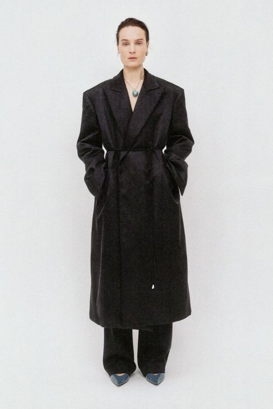
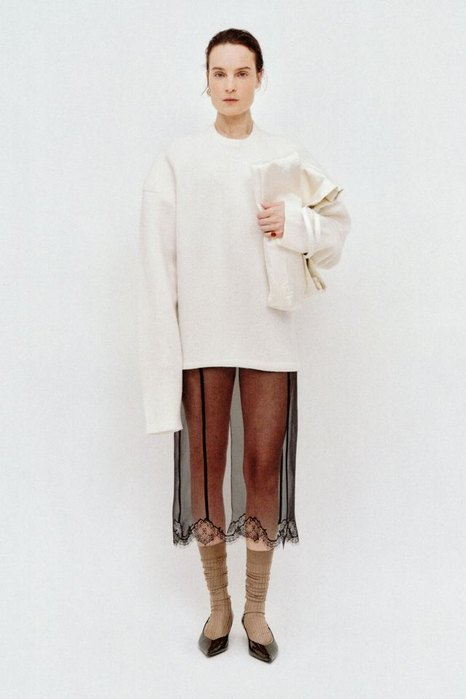
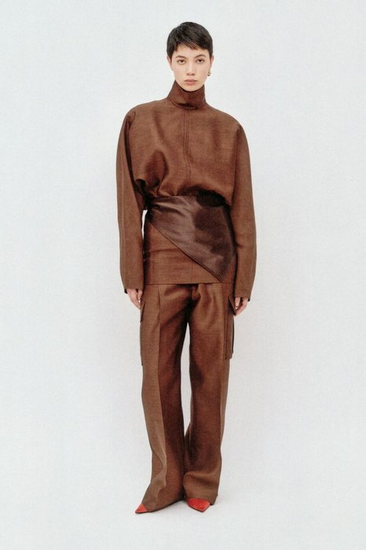
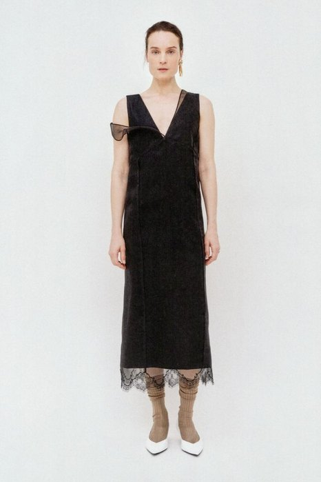

第1课时 / 45分钟
女装设计 III / 第08周
Gate 2 中期评审
核心概念：三维物理验证
白坯样衣把纸面假设，
变成可检查的身体证据。
本周同时复核系列关系、纸样逻辑、试衣结果与制作风险，决定哪两套造型可以继续进入真实面料。
判断顺序：系列角色 → 技术平面图与纸样 → 白坯样衣 → 动作与材料 → 下一步修改
先观察长度、身体距离与材料重量的变化，再判断系列内部哪些结构值得进入白坯布验证。





图像：Carven 2026早秋系列｜课堂反向分析，不代表品牌官方版型说明。
常量｜同一位模特、同一片白背景拍摄条件被固定住，五套的差别只剩衣服本身——这正是白坯样比较该有的条件。
变量｜层次数量大衣＋裤（01）→ 针织＋蕾丝内裙（02）→ 包裹上衣＋裤（03）→ 西装＋腰封＋裤（04）→ 无袖连衣裙＋内裙（05）。
变量｜内裙露出多少02 与 05 用同一条蕾丝内裙，一次露到小腿、一次只露下摆。同一件单品，两个角色。
看点｜哪两套值得做白坯03 的包裹和 04 的腰封是纸面上最说不清的两处——这类结构才需要实物验证。